跳彈坦克 v0.3
主題色換成你給的色票，底色維持白：
黃・主要按鈕、黃隊、頭目薄荷・進度青・選取、藍隊石板藍・字與圖示梅紫・精英、新發現
▶ 試玩／安裝（手機橫放）
裝到 iPhone（不用 Mac）
- 用 Safari 打開上面的「試玩／安裝」
- 按下方的 分享（方框加向上箭頭）→ 加入主畫面 → 新增
- 主畫面出現「跳彈坦克」圖示，點開就是全螢幕，打橫玩
這一版做了什麼
| 你說的 | 怎麼做 |
|---|---|
| 兩個搖桿做成白色透明 liquid glass | 白玻璃底盤（背景斜紋透出來）、左上高光弧、玻璃球搖桿頭；右搖桿外圍是彈匣環：每發一段，正在補的那段慢慢填滿 |
| 背景、介面以白色為主 | 白色桌面、白玻璃面板與按鈕；字和投影從石板藍調出來 |
| 分數板、介面更精緻 | 戰役：第幾關大字＋章節＋敵人迷你坦克（打掉的打斜線）＋愛心；對戰：每隊一列回合點 |
| 遊戲中可切換彈種 | 右搖桿上方的換彈鈕（標準、火箭、跳彈、散彈、爆裂），換的時候會短暫停火 |
| 跳彈路徑全部顯示 | 瞄準線畫完整條路徑，反彈點標 1、2、3，每 1.5 格一個箭頭，終點打 ×；會打到自己時變紅 |
| 彈藥回復跟飛行中的子彈無關 | 彈匣照時間補，不用等場上的子彈消失 |
| 坦克圖鑑 | 13 種坦克，遇到才收進來；卡框是稀有度（普通、稀有青、精英梅紫、頭目黃），有介紹、特點、數值、擊毀數 |
| 更多地圖與關卡（不模仿 Wii） | 6 章 52 關：訓練場、軟木前線、冰原、傳送迷宮、草叢伏擊、炸藥工廠，4 個頭目關；對戰 12 張地圖 |
| 更多坦克造型 | 砲台、步兵、火箭、布雷、連射、狙擊、精英、幽靈、王牌、斥候、重甲、轟炸、指揮官，各自不同車體與炮塔 |
| 做成 iOS App | 兩條路：①上面的「加入主畫面」（現在就能用）；② Xcode 原生 App（需要 Mac，程式碼要先上 GitHub） |
審查分數（10 分＝跟標竿一樣好）
| 版本 | 平均 | 審查說差最多的 | 下一版怎麼改 |
|---|---|---|---|
| v9 | 6.1 | 明度主次倒過來；隊色圈太細 | v10：圈加粗、虛線分隊、坑洞看到桌面 |
| v11 | 6.5 | 傳送門只是地上的圈、炸藥桶跟紅隊撞色、彈匣點和裝填環分兩個東西、頭目不夠大、小螢幕章節頁被切 | v12：傳送門立起來、炸藥桶改橘、分段彈匣環、頭目放大加金環、章節頁收成一屏 |
| v13 | — | 換你給的色票（這一版還沒送審查） | |
標題
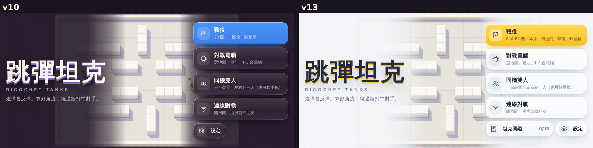
戰役
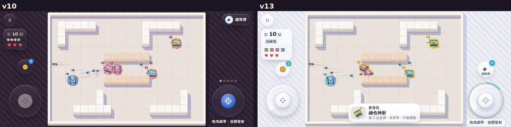
2 對 2：藍隊（青）／黃隊
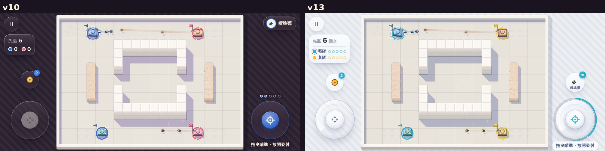
完整反彈路徑
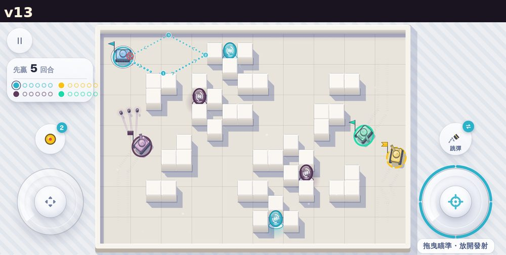
新地形
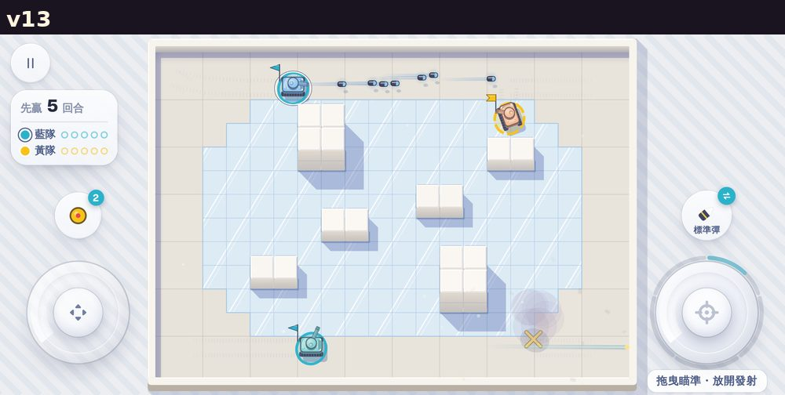
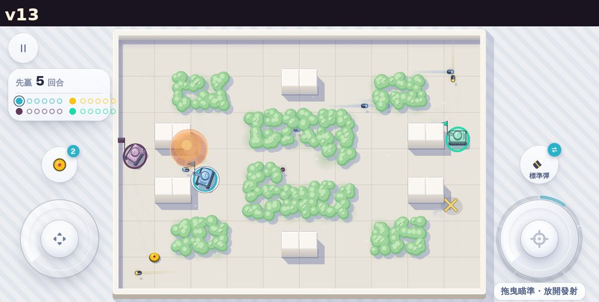
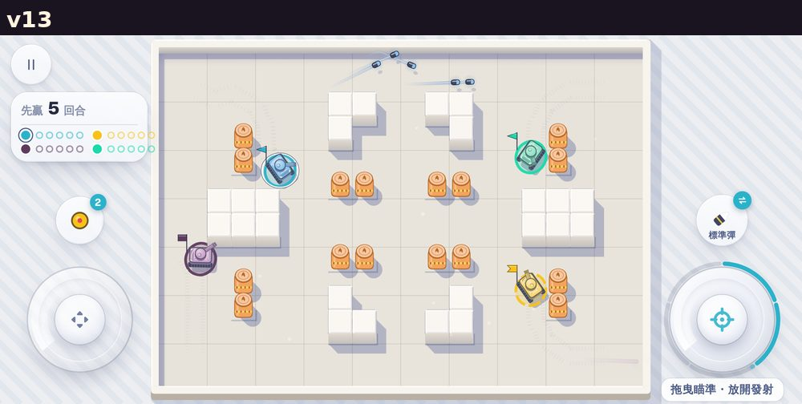
頭目
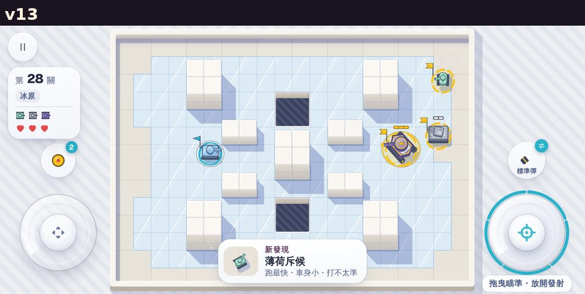
章節與圖鑑
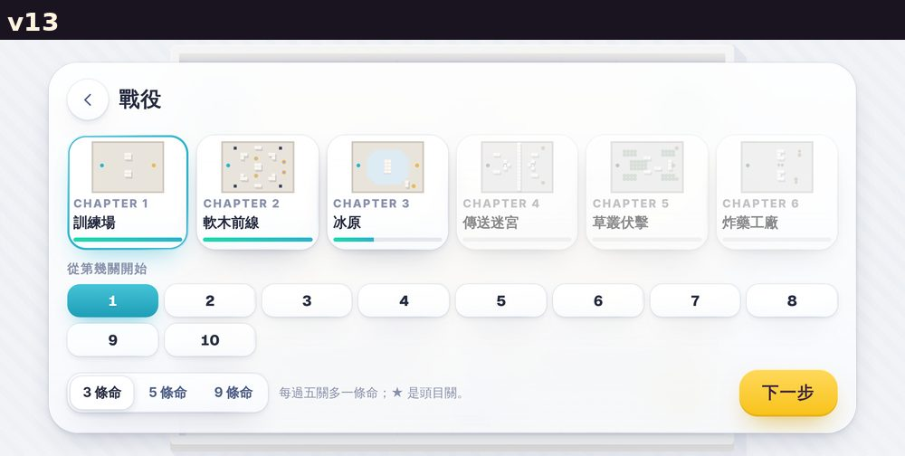
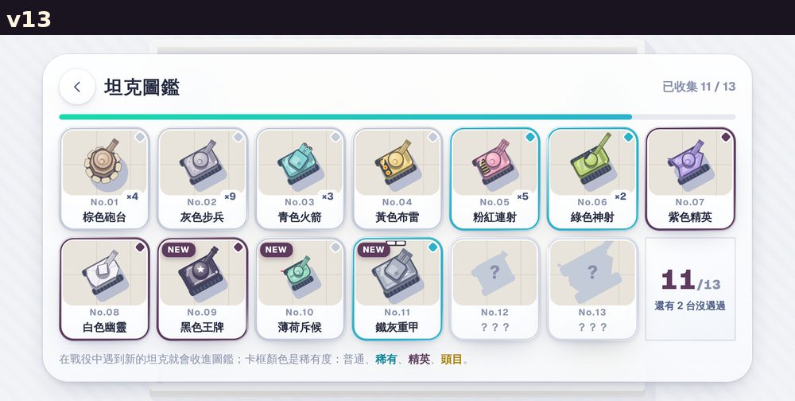
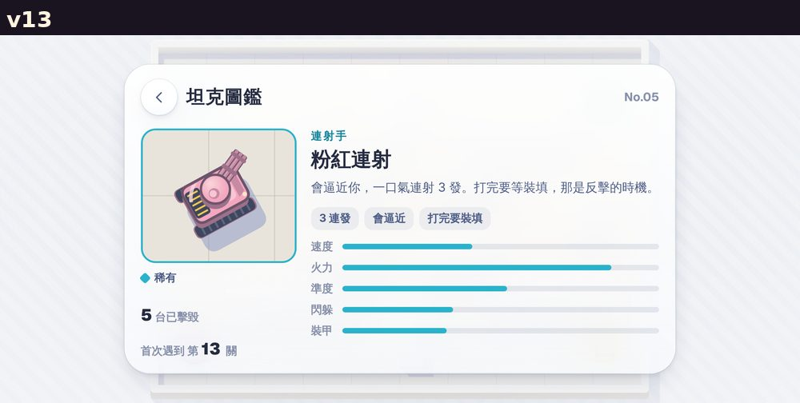
選彈、結算、同機雙人
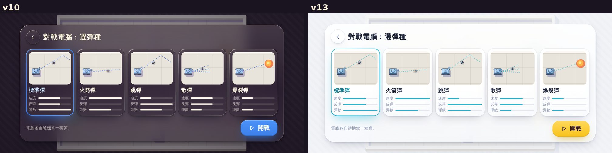
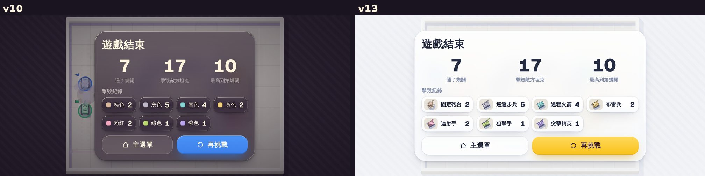
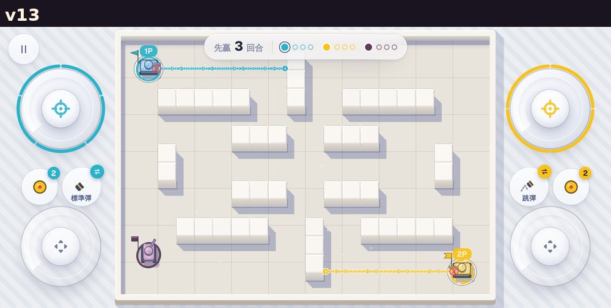